Fitting PSF models: The astigmatism method
3D SMLM imaging can be performed by introducing a weak cylindrical lens into the imaging path to create slight astigmatism in the image [2]. This results in images of molecules with different ellipticity depending on their axial position. When a molecule is in focus, its image appears round. If the molecule is slightly above or below the focal plane, its image appears ellipsoidal. Calibration of the imaging system is needed to determine the orientation of the imaged ellipsoid (the camera chip may not be aligned with cylindrical lens) and the relationships between the axial position and ellipticity of the imaged molecules.
PSF model
A common PSF model for astigmatic 3D imaging is a rotated, elliptical Gaussian function given by the formula
| (1) |
where 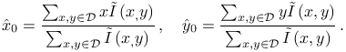
gives the expected photon count at pixel  for PSF
coefficients
for PSF
coefficients  ,
and
,
and
The entries of the coefficient vector  are
as follows: 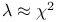 and 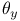 are the sub-pixel molecular
coordinates, 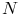 and 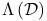 are
the imaged widths of the molecule along two perpendicular axes rotated
by the angle 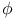 with respect to 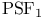 coordinates, 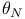
corresponds to the total number of photons emitted by the molecule,
and 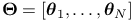 is the background signal level.
are
as follows: 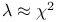 and 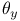 are the sub-pixel molecular
coordinates, 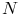 and 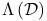 are
the imaged widths of the molecule along two perpendicular axes rotated
by the angle 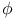 with respect to 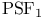 coordinates, 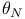
corresponds to the total number of photons emitted by the molecule,
and 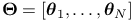 is the background signal level.
Calibration of the imaging system
Calibration is a procedure which determines the orientation angle
of the imaged ellipsoids, and the relationship between the
axial positions of molecules and their imaged widths  .
We modeled this relationship by a pair of second degree polynomials
.
We modeled this relationship by a pair of second degree polynomials
| (2) | |||||
| (3) |
The calibration is typically performed using a Z-stack of images of sub-diffraction fluorescent beads. We use a sparse sample with about 10 to 50 beads in the image and a Z-stack image sequence with an axial range of about 2 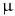m and a step size of 10 nm.
Determining the orientation angle
-
1.
A sequence of images from a Z-stack is processed slice-by-slice using the same methods as during analysis (image denoising, rough localization, PSF fitting). Images of the beads are fit independently using the elliptical Gaussian PSF given by Equation (1) with as a free parameter.
-
2.
Results close to circular are discarded as the angle cannot be determined.
-
3.
The final orientation angle is calculated as the circular mean of all remaining measurements

(4) where 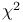 adjusts the fitted angles 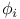, and
 is the number of measured
beads.
is the number of measured
beads.
Ellipticity as a function of an axial position
-
1.
Using the approximate positions of the beads in multiple Z-planes and the orientation angle , both determined in the previous step, the images of the beads are fit again using the elliptical Gaussian PSF given by Equation (1), but with a fixed angle .
- 2.
-
3.
From the fitted models, we determine a common focal plane of the beads and shift the data along the
 -axis such that all beads are positioned
at the same focal plane.
-axis such that all beads are positioned
at the same focal plane. -
4.
The final coefficients are obtained by fitting the pair of polynomials to all shifted data points. The ‘‘zero’’ axial position is given by the intersection of the two polynomials.
Estimating axial position
The axial position of a molecule is determined by minimizing the distance
between the fitted values  and the calibration
curves given by Equations (2) and (3),
thus by
and the calibration
curves given by Equations (2) and (3),
thus by
| (5) |
Using the square root of the widths 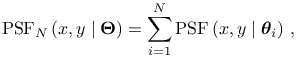 slightly improves the localization accuracy [2]. The minimization was performed by the conjugate gradient method as implemented in the Apache Commons Math library [1] which was initialized from randomized starting points to help avoid local minima.
Fitting of model parameters
Fitting of the model parameters can be done using least squares or maximum-likelihood methods. See PSF fitting methods for more information.
Crowded-field
ThunderSTORM supports fitting of multiple PSF models simultaneously in a single fitting region. See crowded field for more information.
Localization uncertainty
Let be the standard deviation of a fitted Gaussian blob
in nm,  is the (backprojected) pixel size in nm,
is the (backprojected) pixel size in nm,  is the number
of photons detected for a given molecule, and
is the number
of photons detected for a given molecule, and  is the background
signal level in photons calculated as the standard deviation of the
residuals between the raw data and the fitted PSF model. The uncertainty
in the lateral position of a molecule can be approximated by the formula
[4]
is the background
signal level in photons calculated as the standard deviation of the
residuals between the raw data and the fitted PSF model. The uncertainty
in the lateral position of a molecule can be approximated by the formula
[4]
| (6) |
The previous equation can be further adjusted to take EM gain of EMCCD cameras into account [3], giving the expression
| (7) |
We use the same equations for three dimensional localization but we use 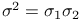. In the axial direction, we use a constant, user-specified value.
References
- [1] Commons Math: The Apache Commons Mathematics Library; version 3.2, Cited by: Estimating axial position.
- [2] (2008-02) Three-dimensional super-resolution imaging by stochastic optical reconstruction microscopy, Science (New York, N.Y.) 319 (5864), pp. 810–3. External Links: Document, ISSN 1095-9203. Cited by: Estimating axial position, Fitting PSF models: The astigmatism method.
- [3] (2010-01) Localization capability and limitation of electron-multiplying charge-coupled, scientific complementary metal-oxide semiconductor, and charge-coupled devices for superresolution imaging, Journal of biomedical optics 15 (6), pp. 066005. External Links: Document, ISSN 1560-2281. Cited by: Localization uncertainty.
- [4] (2002-05) Precise nanometer localization analysis for individual fluorescent probes, Biophysical journal 82 (5), pp. 2775–83. External Links: Document, ISSN 0006-3495. Cited by: Localization uncertainty.
![[LOGO]]()